272주 기록 · 94개국
순서는 TMDB 인기도입니다 — 넷플릭스 외 서비스는 공식 순위를 공개하지 않습니다. 제공처는 JustWatch 자료(2026-09-21 확인)이며 가입 전 서비스에서 최종 확인하세요. 애플TV+ 요금·할인 →
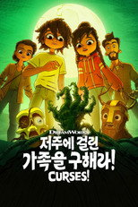
'저주에 걸린 가족을 구해라!' - Curses! Curses!시리즈 · 2023 · 애니메이션 · 가족제공처 ↗10'스누피 스페셜: 한여름의 뮤지컬' - Snoopy Presents: A Summer Musical Snoopy Presents: A Summer Musical영화 · 2025 · 애니메이션 · 가족 · 40분 · 티빙에도제공처 ↗11'원더라' - WondLa WondLa시리즈 · 2024 · 애니메이션 · SF/판타지 · 티빙에도제공처 ↗12'낯선 행성' - Strange Planet Strange Planet시리즈 · 2023 · 애니메이션 · 코미디 · 티빙에도제공처 ↗13'벨벳 토끼' - The Velveteen Rabbit The Velveteen Rabbit영화 · 2023 · 애니메이션 · 가족 · 44분제공처 ↗14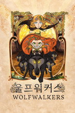
'울프워커스' - Wolfwalkers Wolfwalkers영화 · 2020 · 애니메이션 · 가족 · 102분 · 티빙에도제공처 ↗15'프래글 록: 화려한 귀환' - Fraggle Rock: Back to the Rock Fraggle Rock: Back to the Rock시리즈 · 2022 · 가족 · 애니메이션제공처 ↗16'소녀 탐정 해리엇' - Harriet the Spy Harriet the Spy시리즈 · 2021 · 애니메이션 · 가족제공처 ↗17'우리는 이 행성에 살고 있어: 지구에서 살아가는 법' - Here We Are: Notes for Living on Planet Earth Here We Are: Notes for Living on Planet Earth영화 · 2020 · 애니메이션 · 가족 · 37분 · 티빙에도제공처 ↗18'스누피 스페셜: 친구가 되어 기뻐, 프랭클린' - Snoopy Presents: Welcome Home, Franklin Snoopy Presents: Welcome Home, Franklin영화 · 2024 · 애니메이션 · 가족 · 39분 · 티빙에도제공처 ↗19'우주로 간 스누피: 생명체를 찾아서' - Snoopy in Space: The Search for Life Snoopy in Space: The Search for Life시리즈 · 2019 · 애니메이션 · 가족 · 티빙에도제공처 ↗20'스누피 스페셜: 사랑하는 엄마 (그리고 아빠)에게' - Snoopy Presents: To Mom (and Dad), with Love Snoopy Presents: To Mom (and Dad), with Love영화 · 2022 · 애니메이션 · 38분 · 티빙에도제공처 ↗21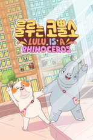
'룰루는 코뿔소' - Lulu is a Rhinoceros Lulu Is a Rhinoceros영화 · 2025 · 애니메이션 · 가족 · 47분 · 티빙에도제공처 ↗22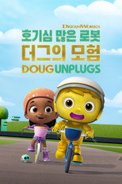
'호기심 많은 로봇 더그의 모험' - Doug Unplugs Doug Unplugs시리즈 · 2020 · 애니메이션 · 가족제공처 ↗23'고요한 물' - Stillwater Stillwater시리즈 · 2020 · 가족 · 애니메이션제공처 ↗24'스누피 스페셜: 작은 실천의 힘' - Snoopy Presents: It's the Small Things, Charlie Brown Snoopy Presents: It's the Small Things, Charlie Brown영화 · 2022 · 애니메이션 · 가족 · 38분 · 티빙에도제공처 ↗25찰리 브라운의 할로윈 It's the Great Pumpkin, Charlie Brown영화 · 1966 · 가족 · 애니메이션 · 25분 · 티빙에도제공처 ↗26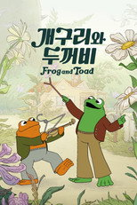
'개구리와 두꺼비' - Frog and Toad Frog and Toad시리즈 · 2023 · 가족 · 애니메이션제공처 ↗27'스누피 스페셜: 루시의 아주 특별한 학교' - Snoopy Presents: Lucy's School Snoopy Presents: Lucy's School영화 · 2022 · 가족 · 애니메이션 · 38분 · 티빙에도제공처 ↗28'찰리 브라운, 너는 누구니?' - Who Are You, Charlie Brown? Who Are You, Charlie Brown?영화 · 2021 · 다큐멘터리 · 애니메이션 · 55분 · 티빙에도제공처 ↗29'골디' - Goldie Goldie시리즈 · 2025 · 애니메이션 · 가족 · 티빙에도제공처 ↗30'스누피 스페셜: 세상에 단 하나뿐인 마시' - Snoopy Presents: One-of-a-Kind Marcie Snoopy Presents: One-of-a-Kind Marcie영화 · 2023 · 애니메이션 · 가족 · 39분 · 티빙에도제공처 ↗31'늑대소년과 만물 공장' - Wolfboy and the Everything Factory Wolfboy and the Everything Factory시리즈 · 2021 · 가족 · 애니메이션제공처 ↗32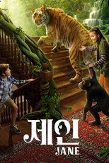
'제인' - Jane Jane시리즈 · 2023 · 가족 · 애니메이션제공처 ↗33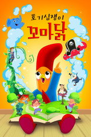
'호기심쟁이 꼬마 닭' - Interrupting Chicken Interrupting Chicken시리즈 · 2022 · 가족 · 애니메이션제공처 ↗34'세모, 네모, 동그라미 모양 친구들' - Shape Island Shape Island시리즈 · 2023 · 가족 · 애니메이션제공처 ↗35'콩닥콩닥, 블러시' - Blush Blush영화 · 2021 · 애니메이션 · 로맨스 · 11분 · 티빙에도제공처 ↗36'프레즐 가족' - Pretzel and the Puppies Pretzel and the Puppies시리즈 · 2022 · 가족 · 애니메이션제공처 ↗37'엘 데포' - El Deafo El Deafo시리즈 · 2022 · 애니메이션 · 가족제공처 ↗38찰리 브라운과 스누피 쇼 The Charlie Brown and Snoopy Show시리즈 · 1983 · 애니메이션 · 코미디 · 티빙에도제공처 ↗39찰리 브라운의 발렌타인데이 대작전 A Charlie Brown Valentine영화 · 2002 · 가족 · 애니메이션 · 25분 · 티빙에도제공처 ↗40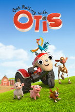
'작은 트랙터 오티스와 달려보자!' - Get Rolling with Otis Get Rolling with Otis시리즈 · 2021 · 애니메이션 · 가족제공처 ↗41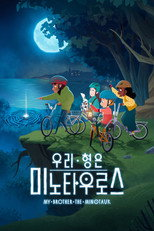
'우리 형은 미노타우로스' - My Brother the Minotaur My Brother the Minotaur시리즈 · 2026 · 애니메이션 · 가족 · 티빙에도제공처 ↗42찰리 브라운의 크리스마스 A Charlie Brown Christmas영화 · 1965 · 애니메이션 · 가족 · 25분 · 티빙에도제공처 ↗43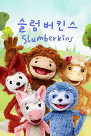
'슬럼버킨스' - Slumberkins Slumberkins시리즈 · 2022 · 가족 · 애니메이션제공처 ↗44'파인콘 & 포니' - Pinecone & Pony Pinecone & Pony시리즈 · 2022 · 애니메이션 · 가족제공처 ↗45'세이고 미니 프렌즈' - Sago Mini Friends Sago Mini Friends시리즈 · 2022 · 가족 · 애니메이션제공처 ↗46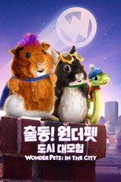
'출동! 원더 펫: 도시 대모험' - Wonder Pets: In the City Wonder Pets: In the City시리즈 · 2024 · 애니메이션 · 가족제공처 ↗47'아기 부엉이 에바의 일기' - Eva the Owlet Eva the Owlet시리즈 · 2023 · 가족 · 애니메이션제공처 ↗48찰리 브라운의 추수감사절 A Charlie Brown Thanksgiving영화 · 1973 · 애니메이션 · 코미디 · 25분 · 티빙에도제공처 ↗49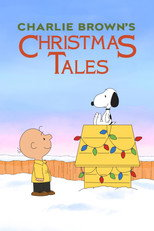
찰리 브라운의 크리스마스 이야기 Charlie Brown's Christmas Tales영화 · 2002 · 애니메이션 · 코미디 · 18분 · 티빙에도제공처 ↗50찰리 브라운의 새해 Happy New Year, Charlie Brown영화 · 1986 · 가족 · 애니메이션 · 25분 · 티빙에도제공처 ↗51찰리 브라운의 발렌타인 데이 Be My Valentine, Charlie Brown영화 · 1975 · 애니메이션 · 가족 · 25분 · 티빙에도제공처 ↗52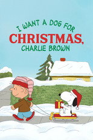
크리스마스엔 강아지를 원해, 찰리 브라운 I Want a Dog for Christmas, Charlie Brown영화 · 2003 · 애니메이션 · 코미디 · 41분 · 티빙에도제공처 ↗53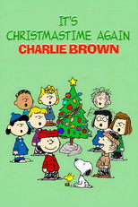
찰리 브라운의 크리마스 어게인! It's Christmastime Again, Charlie Brown영화 · 1992 · 애니메이션 · TV 영화 · 22분 · 티빙에도제공처 ↗54찰리 브라운의 부활절 It's the Easter Beagle, Charlie Brown영화 · 1974 · 가족 · 애니메이션 · 25분 · 티빙에도제공처 ↗